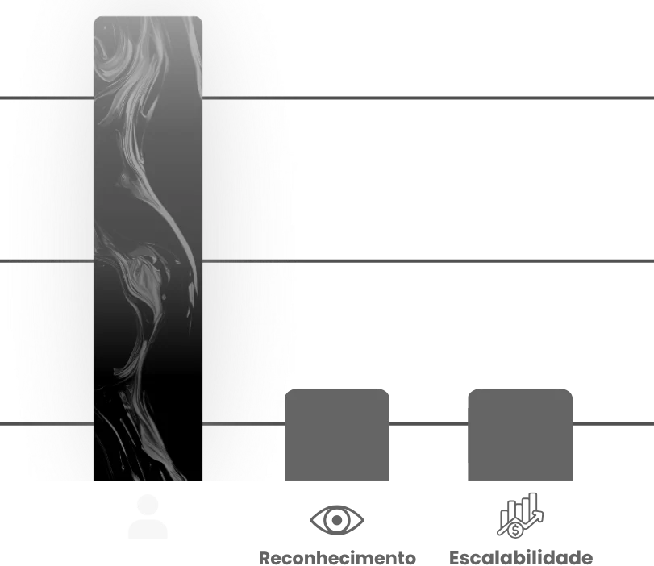
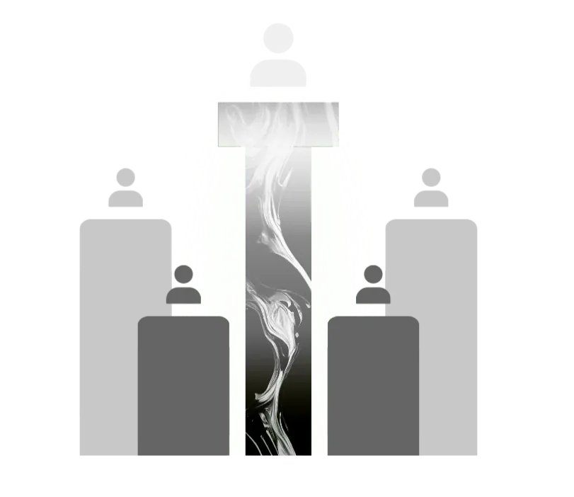
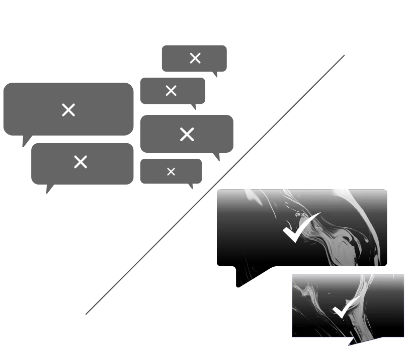
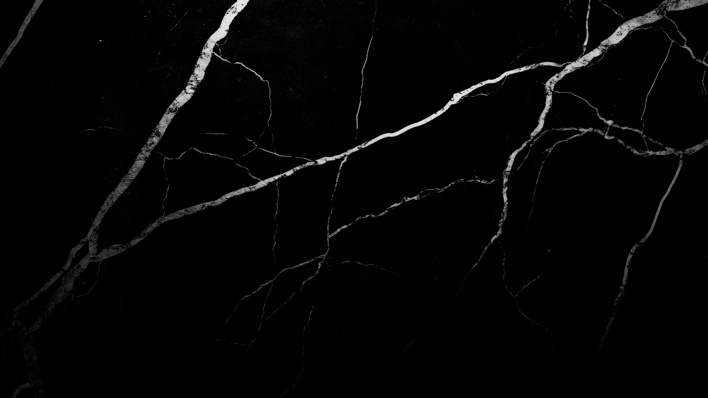

Odontologia
Meta Ads · agendamentos / mês
86
+9 esta semana
14 pico
·
2 mín
·
7 méd
Assessoria premium · Medicina e odontologia
Implementamos um ecossistema de previsibilidade para médicos e dentistas. Através de inteligência estratégica e tráfego qualificado, transformamos sua clínica em uma autoridade e aceleramos o fechamento de novos tratamentos.
Vagas limitadas — o modelo admite um número restrito de parceiros simultâneos.
Quer ver esse painel com os números da sua clínica?
01Previsibilidade
O mercado de saúde digital exige maturidade, não promessa de resultado imediato. Os dois primeiros meses estruturam posicionamento de autoridade e alinhamento comercial. É a partir do terceiro que o fluxo de pacientes qualificados se estabiliza.
Curva de maturação
Curva ilustrativa do comportamento da operação. A maturação varia conforme a competitividade da região e o ticket médio dos tratamentos.
Base de dados ADR
Acumulamos histórico de campanhas em clínicas médicas e odontológicas. Sabemos o que já funciona em cada especialidade — da implantodontia à clínica geral — e replicamos o que dá resultado.
Você não paga para descobrir o que funciona. Você paga para escalar o que já está validado.
02O que fazemos
Saúde não se vende como varejo. A decisão do paciente envolve confiança, reputação e uma jornada mais longa — e há normas éticas que limitam o que pode ser anunciado. Por isso a estratégia opera em três frentes simultâneas.
Google Ads captura quem já procura um tratamento na sua região. Meta Ads constrói o desejo antes disso — as duas operadas pela liderança sênior.
Presença digital sofisticada que blinda a reputação do profissional e eleva a percepção de valor.
Não entregamos volume de leads. Filtramos o público para atrair apenas o perfil de alto valor, compatível com o ticket dos procedimentos.
Um ecossistema que substitui a dependência de indicações por demanda constante e mensurável.
Recepção treinada ou SDR implantado — o paciente qualificado não se perde no atendimento.
Estratégia construída sobre as regras da publicidade em saúde. Nada de "antes e depois".
03Prova social
{{ empresaAtiva }}
{{ depoimentoAtivo }}
{{ atualNum }} / {{ totalNum }} Próximo
04O ecossistema de previsibilidade
Pilar 01 · Previsibilidade
Nossa assessoria blinda sua autoridade e constrói uma presença digital sofisticada para atrair o paciente ideal. Transformamos seu consultório em um ativo previsível, para você focar apenas na medicina.

Pilar 02 · Autoridade
Elevamos sua percepção de valor para que o paciente escolha você pela especialidade, não pelo preço. Construímos o reconhecimento necessário para que sua consulta seja o desejo do público ideal antes mesmo do primeiro contato.

Pilar 03 · Demanda
Através de inteligência em tráfego pago, estabelecemos uma demanda infinita para sua clínica. Não buscamos apenas volume; filtramos o público para atrair apenas pacientes com o perfil ideal, otimizando seu investimento e o tempo da sua equipe.

05Generalista × especializada
Não seja mais o profissional com muito potencial mas pouco resultado na internet.
Você sofre com gestores genéricos que não entendem a jornada do paciente e "torcem" para que os anúncios tragam algum retorno.
Especialistas que decodificam o mercado da saúde. Aplicamos estratégias validadas em diversos cases de sucesso para garantir previsibilidade e escala.
Estratégias ultrapassadas que ferem normas éticas ou simplesmente não atraem o público de alto valor que sua clínica merece.
Utilizamos uma sistemática de mídias que vai muito além do convencional. Criamos conexão e ganhamos a confiança do paciente antes mesmo da consulta.
06Comercial de alta conversão
Marketing sozinho não fecha tratamento. A inteligência de tráfego gera e filtra a demanda, mas o fechamento acontece dentro da clínica — por isso a metodologia integra um pilar dedicado ao comercial.
01
O primeiro contato define a percepção de valor da clínica. Padronizamos abordagem, tempo de resposta e tom de voz para que o paciente encontre do outro lado a mesma autoridade que o anúncio prometeu.
02
Separar o curioso do paciente com intenção real de tratamento — antes que ele ocupe um horário na agenda. A triagem protege o tempo da equipe clínica e concentra o esforço comercial em quem tem perfil para o procedimento.
03
A assessoria atua de forma consultiva na estruturação do setor comercial, com duas frentes possíveis conforme o tamanho da operação:
04
Nenhum lead qualificado é perdido por silêncio. O acompanhamento é processo, não improviso: cadência definida, responsável nomeado e o agendamento como métrica final — não o clique.
A ADR Marketing não é apenas mais uma empresa de marketing digital; somos uma assessoria de elite que nasceu para preencher uma lacuna crítica no mercado: a falta de profundidade estratégica no setor da saúde.
Enquanto o mercado opera com modelos de escala e entrega delegada a iniciantes, nós seguimos o caminho oposto. Sob a liderança direta de Caio, consolidamos um modelo de exclusividade.
Aqui, a inteligência e a execução são conduzidas por quem realmente entende as complexidades regulatórias e a jornada única do paciente na medicina e odontologia.
07Como a parceria funciona
O modelo de negócios admite apenas um número restrito de parceiros simultâneos, e a viabilidade de cada nova parceria é sempre condicionada a um diagnóstico comercial prévio. Nada aqui roda em escala.
Etapa 01
Antes de qualquer proposta, avaliamos o cenário da clínica: presença digital, ticket dos procedimentos, competitividade da região e maturidade do comercial. É esse diagnóstico que define se a parceria faz sentido.
Etapa 02
Construímos a presença digital que blinda a reputação do profissional e eleva a percepção de valor — dentro das normas éticas do setor. O paciente passa a desejar a sua consulta antes do primeiro contato.
Etapa 03
Campanhas operadas pela liderança sênior, com filtragem de público para atrair apenas o perfil de alto valor. Google Ads captura a demanda existente; Meta Ads constrói a que ainda não existe.
Etapa 04
O fechamento acontece dentro da clínica. Atuamos de forma consultiva na estruturação do setor comercial, com treinamento de qualificação para a recepção ou orientação para implementar SDRs de alta performance.
08Depoimentos
Médicos e dentistas que trocaram indicação e disputa por preço por um fluxo previsível de pacientes particulares.

09Restou alguma dúvida?
Abrimos o WhatsApp com sua solicitação. Se a janela não abriu, toque no botão abaixo.
Abrir o WhatsApp